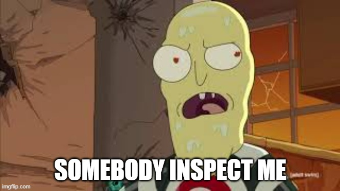

I am the inspection man
I want you to inspect me

- Inspect me
- Inspect me
Don't' inspect me- Inspect me some more
- Don't stop inspecting me
- Inspection raised to the power of inspection - InspectionInspection
- Inspection base inspection - InspectionInspection
- INSPECT ME!!
YOU SHOULD HAVE INSPECTED ME!